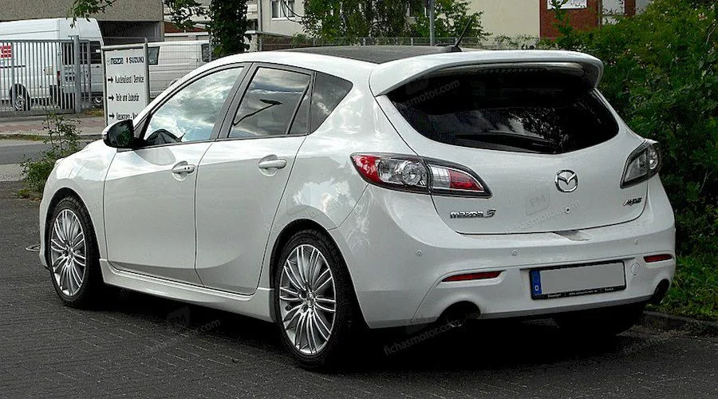
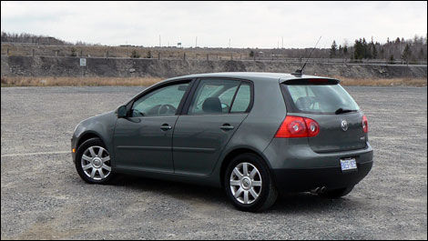
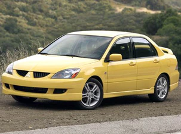
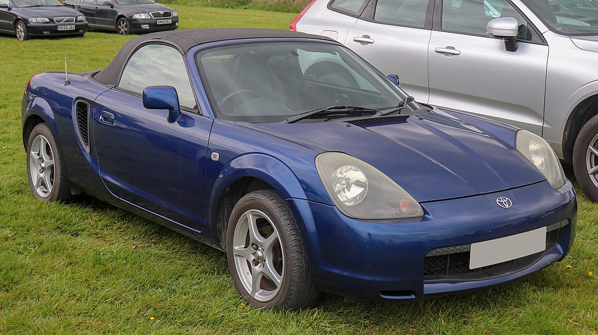

BL Mazda3

Especificaciones:
- Peso: 1350 Kg
- Motor 2.5
- Potencia: 165 HP @ 6000 RPM
- Torque: 150 ft.lb @ 4000 RPM
- Consumo ciudad: 22 MPG
MK5 Rabbit

Especificaciones:
- Peso: 1350 Kg
- Motor 2.5
- Potencia: 170 HP @ 5500 RPM
- Torque: 160 ft.lb @ 4000 RPM
- Consumo ciudad: 22 MPG
Lancer Ralliart

Especificaciones:
- Peso: 1350 Kg
- Motor 2.4
- Potencia: 170 HP @ 5500 RPM
- Torque: 160 ft.lb @ 4000 RPM
- Consumo ciudad: 22 MPG
MR2 Spyder

Especificaciones:
- Peso: 1100 Kg
- Motor 1.8
- Potencia: 140 HP @ 6000 RPM
- Torque: 120 ft.lb @ 4000 RPM
- Consumo ciudad: 22 MPG